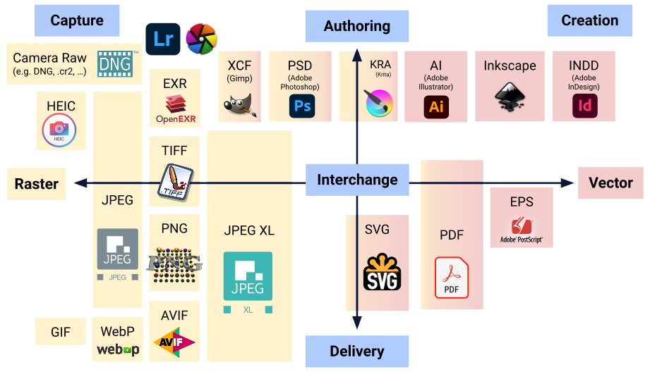
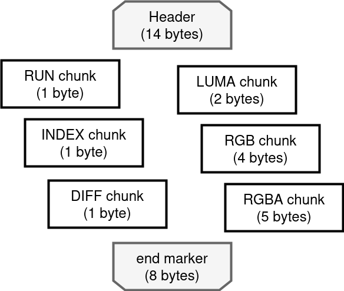

In general, to store a file on a computer, some form for file format is required. Examples of fileformats are: .pdf, .docx, and .html. A file format defines an encoding protocol on how to store the data.
As just seen, storing images in full will require a lot of storage. Of course, there are file formats for images as well. The most well known image file formats (or image formats) are .jpeg, .png, and .gif. If no encoding is used (or not much), this type of file format is referred to as a raw image.
Image encoding formats … this is where it gets insane. Some formats are small, others are high-quality. Some formats drop certain data (lossy), others keep everything (lossless). Some formats are used by camera’s that generate images, others are generated by artists. Some formats are intended for the web, others are specially for printing … you get the point 😉

For the project, the QOI (Quite OK Image Format) will be used. More info can be found here. QOI’s specification can be found here and was released on January 2022, by Dominic Szablewski, who claims:
“I have no idea what i’m doing. I’m not a compression guy.”

QOI starts by noting down a header which consists of a handfull of parameters. Next, there is an indetermined number of chunks. And finally, there is fixed 8-byt end marker.
The chunks in between the header and end marker can be of these 5 types:
The order in which the chunks are enumerated, is also the order of precedence.
For the indexed chunk, a running array is kept of 64 pixels. If the current pixel is present in this array, the position in the array is stored. QOI uses a quick way for looking up the pixel by means a hash table. A custom, very simple hash function is designed for this purpose:
H(r, g, b, a) = (3xr + 5xg +7xb + 11xa) mod 64
If the array has the same pixel value on the position as pointed to by the hash, the INDEX chunk is used.